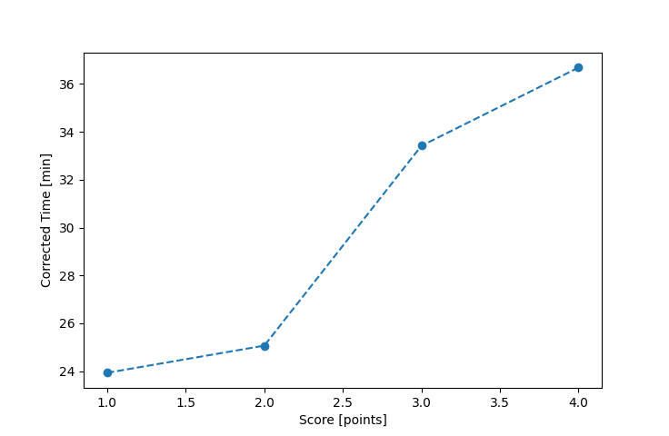

| Wind: | 2-3 (BFT) |
|---|---|
| RC: | Ian_O , Nick_H |
| Date: | July 21, 2024 |
| Notes: | M2 90 |
| Rank / Score | Name | Boat | Input Time [mm:ss] | Input Offset [mm:ss] | Race Time [mm:ss] | Race Time [s] | Handicap | Corrected Time [s] | Corrected Time [mm:ss] |
|---|---|---|---|---|---|---|---|---|---|
| 1.0 | David_Bu | SF | 28:32 | 06:00 | 22:32 | 1352 | 1.00400 | 1347 | 22:27 |
| 2.0 | Bill_P | SF | 31:33 | 06:00 | 25:33 | 1533 | 1.00400 | 1527 | 25:27 |
| 3.0 | Heather_B | SF | 43:41 | 06:00 | 37:41 | 2261 | 1.00400 | 2252 | 37:32 |
| 4.0 | Jim_S | SF | 44:37 | 06:00 | 38:37 | 2317 | 1.00400 | 2308 | 38:28 |
| 5.0 | Larry_G | SF | 49:53 | 06:00 | 43:53 | 2633 | 1.00400 | 2623 | 43:43 |
| 6.0 | JoDene_C | SF | FIP_6 | -- | -- | -- | -- | -- | FIP_6 |

Application Notes:
All race results are unofficial
View source code at https://github.com/cessnao3/portsmouthracecalc/